Демонстрация создания элемента User Control в WPF
На данном занятии будет разработан пользовательский элемент управления (User Control). User Control предоставляет простой способ создания собственных элементов управления и является объединением нескольких уже существующих элементов управления в один элемент, допускающий простое повторное использование. В данном примере разрабатывается элемент ромб, внутри которого будет находиться изображение (требуется несколько таких элементов). По умолчанию демонстрируется черно-белое изображение, при наведении курсора на изображение демонстрируется его цветная версия. Под изображением располагается заголовок и описание, разделенные линией. При нажатии на изображение демонстрируется текст. Основные шаги реализации элемента User Control:
- Создание
- Реализация
- Использование
Создание элемента User Control
1. Добавляем элемент User Control
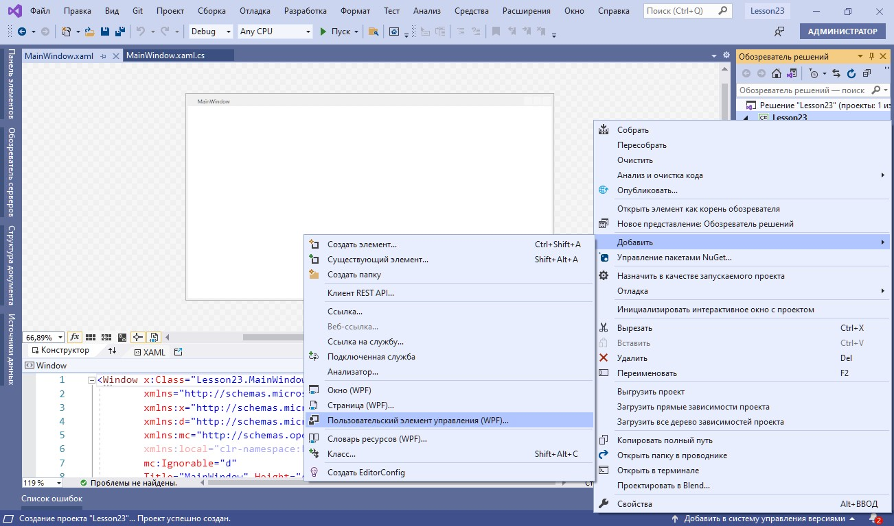
2. Создаем требуемые свойства элемента
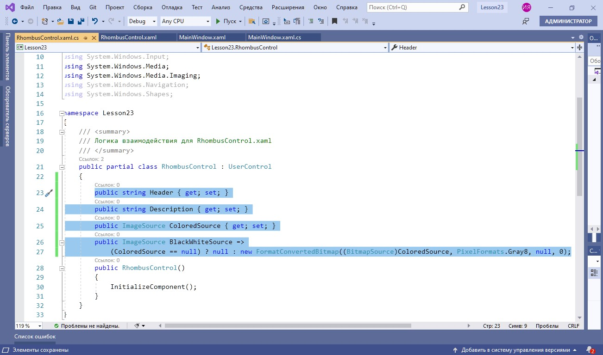
Важно
К свойствам элемента относятся: заголовок, описание, цветная версия изображения, а также черно-белая версия, которая будет конвертироваться из цветного изображения
3. Устанавливаем DataContext
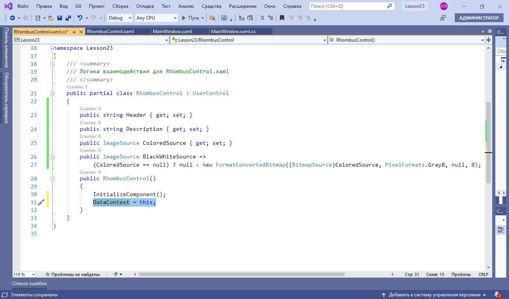
Важно
Установка DataContext (контекста данных) позволяет делать привязку элементов разметки к свойствам
Реализация элемента User Control
1. Добавляем элемент Grid
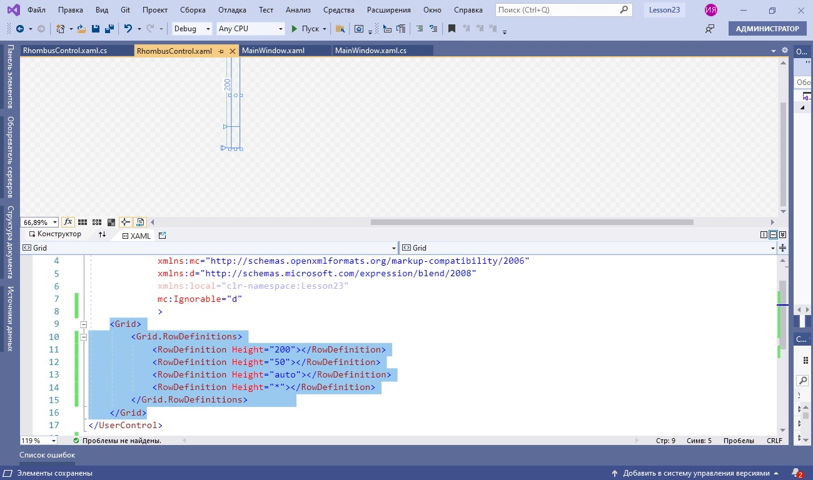
Важно
Grid (сетка) разделяется на четыре строки заданной высоты. Обратите внимание на рабочую область, где демонстрируется вид приложения
2. Настраиваем представление основного элемента-ромба
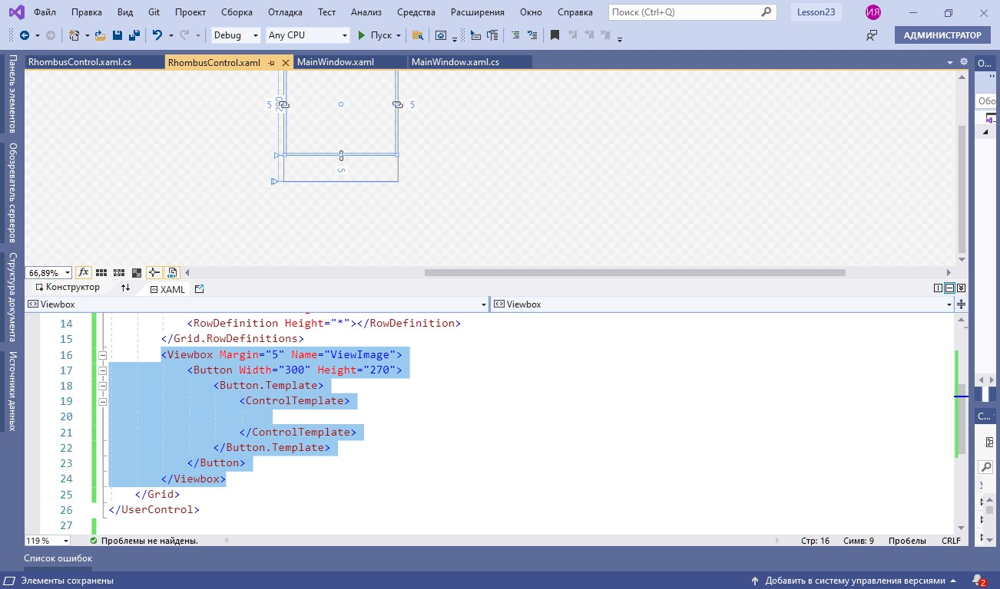
Важно
В первой строке Grid будет располагаться ромб. Элемент ViewBox позволит растягивать ромб с изображением по размеру контейнера. Также внутри ViewBox будет находиться кнопка с переопределенным template (шаблоном)
3. Добавляем содержимое кнопки внутри ромба
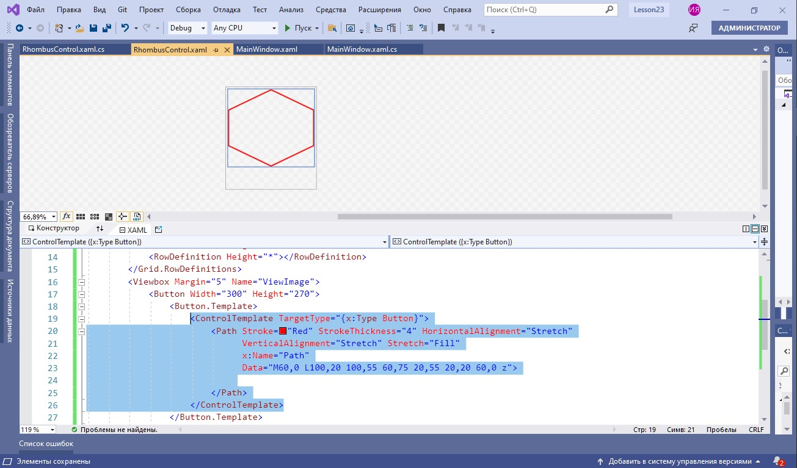
Важно
Кнопка представляет собой элемент Path, для которого задаются координаты вершин, толщина и цвет границ
4. Настраиваем отображение заголовка
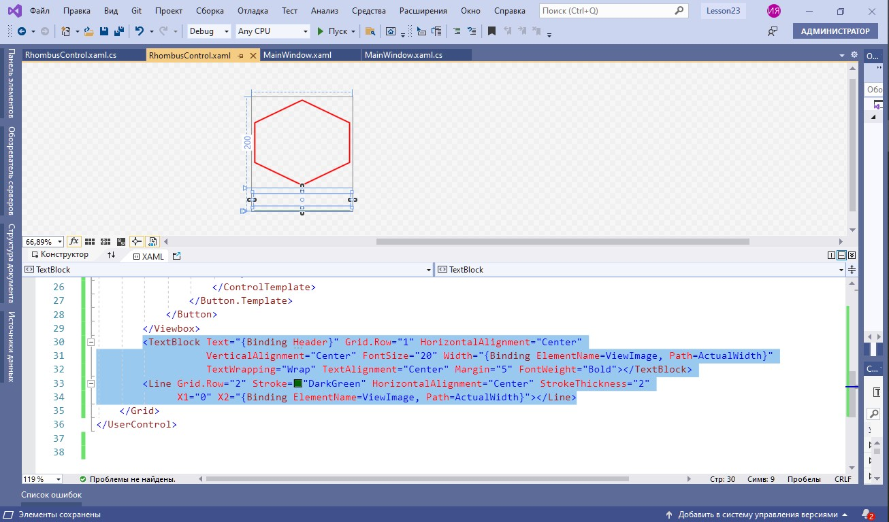
Важно
Заголовок размещается внутри элемента TextBlock, текст которого привязывается к свойству Header, а ширина — к текущим размерам ViewBox. Зеленая линия цвета DarkGreen добавляется для того, чтобы разделить заголовок и описание
5. Настраиваем отображение описания
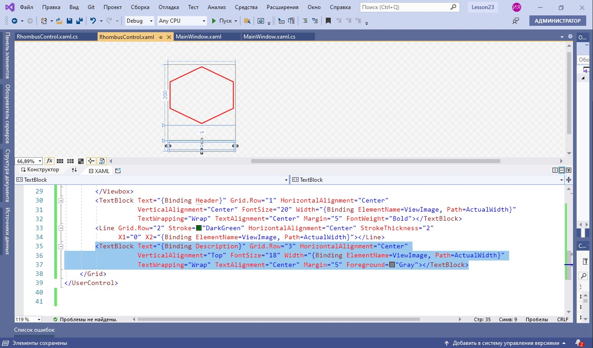
Важно
TextBlock для описания добавляется по аналогии с заголовком с тем лишь отличием, что цвет шрифта будет серым
6. Настраиваем поведение изображения
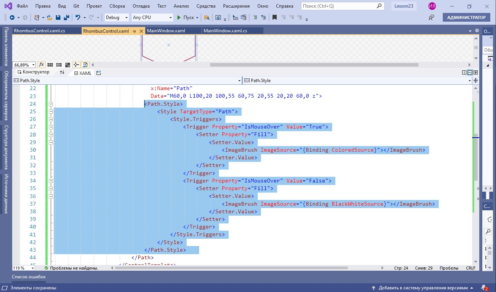
Важно
Поведение изображения будет зависеть от значения свойства IsMouseOver. Если свойство принимает значение true, демонстрируется цветное изображение ColoredSource и черно-белое BlackWhiteSource в противном случае
7. Добавляем кнопку для вывода информации об изображении
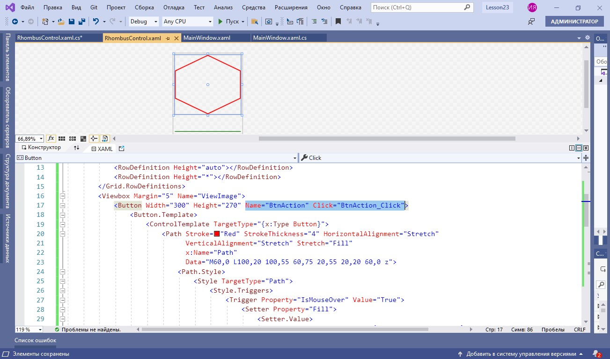
8. Реализуем обработку клика
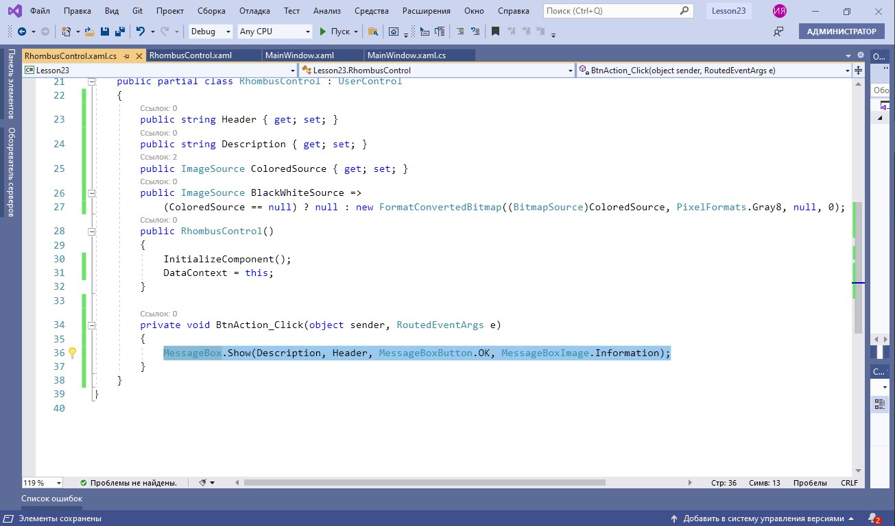
Важно
Обработкой будет служить вывод информации об элементе в MessageBox
Использование User Control
1. Используем созданный элемент в интерфейсе
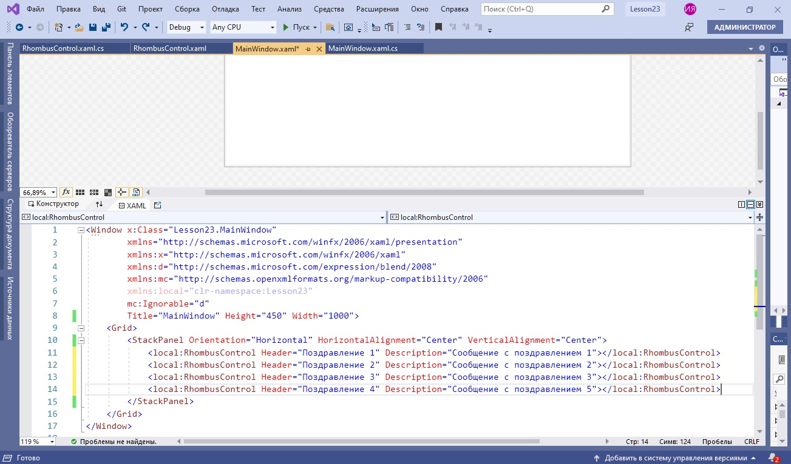
Важно
Несколько созданных элементов располагаются на MainWindow в StackPanel с горизонтальной ориентацией. Следует обратить внимание, что для использования пользовательского элемента управления используется префикс local
2. Добавим изображения в проект
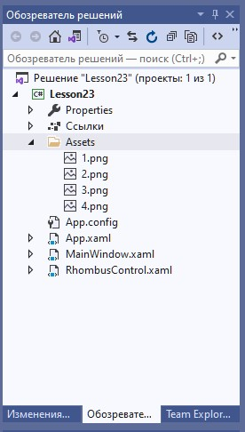
Важно
Изображения для каждого элемента подгружаются из папки Assets, куда они предварительно добавляются (см. на область внутри черной рамки)
3. Добавим каждому элементу соответствующее изображение
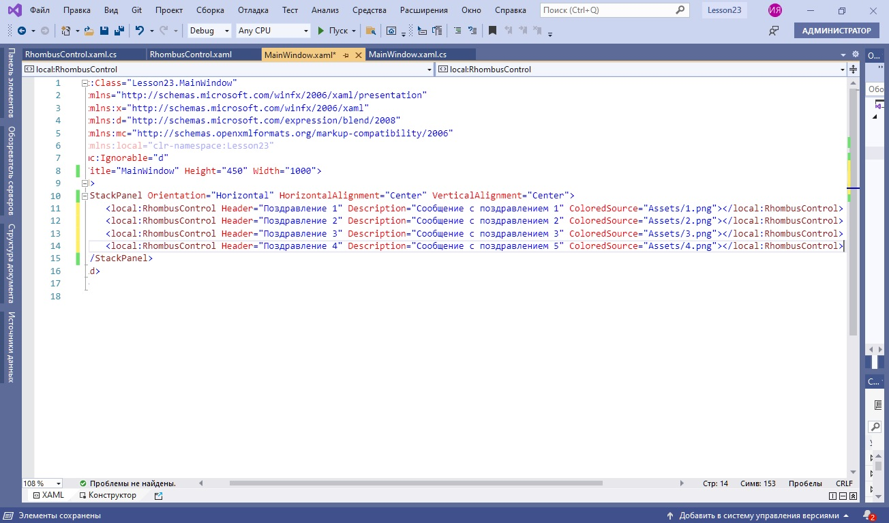
Важно
Изображения можно добавлять как вручную, так и путем выбора в окне свойств. В данном случае требуемое изображение выбирается из нескольких, хранящихся в папке Assets (см. на область внутри черной рамки)
4. Проверяем результат
A) Курсор не на изображениях
B) Курсор на изображении
C) Обработка нажатия
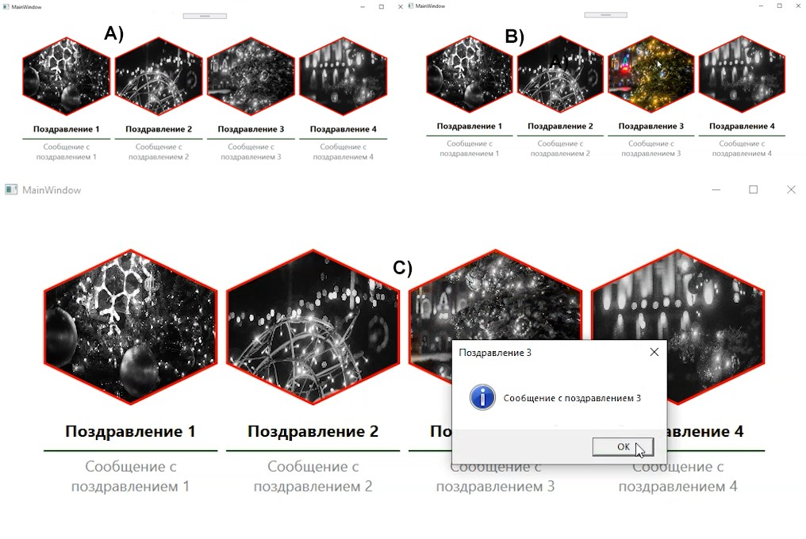
Итоги
Вы познакомились с созданием собственного элемента управления в WPF.